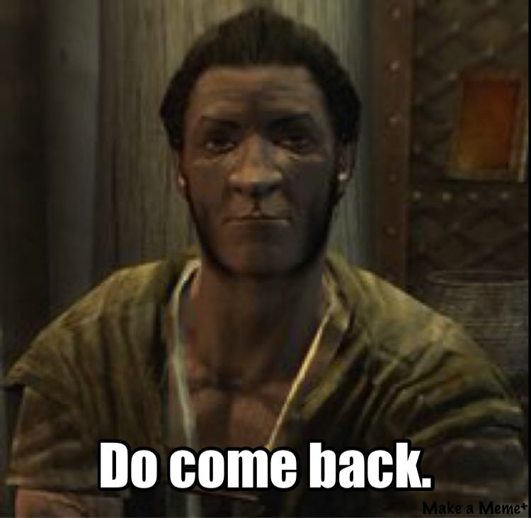

Dans le Val Oublié, vous aurez l’opportunité d’affronter des géants de glace afin de récupérer les Gemmes Parangon. Au nombre de cinq, celles-ci vous permettront d’atteindre des lieux secrets en utilisant le Portail Parangon situé à l’Ouest de l’Autel de la Vue.
Dans des temps anciens, un culte voué aux dragons s'était instauré en Bordeciel. Maintenant qu'Alduin est de retour, les émissaires de ce culte reviennent eux aussi à la vie. Au total, ce sont huit grands Prêtres-dragons qui sont éparpillés dans les donjons les plus tortueux et dangereux du pays. Une fois vaincu, chacun laisse un masque aux pouvoirs surprenants derrière lui : gardez-les précieusement.
Prêtres-Dragons de Dragonborn
Si l'une de ces quêtes a été terminée et que vous ne possédez pas/plus l'item qui y est lié, soit vous devriez y retourner, soit Belethor a fait une super affaire.
| Quête | Item Associé |
|---|---|
| Jugement d'un pair | Épée d'Harkon |
| L'appel de Boéthia | Lame du Sacrifice |
| La descente finale | Lame des Skalsangues |
| La fin du cauchemar | Crâne de la Corruption |
| La folie incarnée | Wabbajack |
| La marche macabre | Gourdin du champion |
| La mort incarnée | Lame de la souffrance |
| La quête de l'extraordinaire | Targe sanguinaire |
| Le balafré | AnimortisSangalfange |
| Le bâton de Magnus | Bâton de Magnus |
| Le seul remède | Parasortis |
| Les bienfaits de la nature | Fléortie |
| Les fragments du passé | Dague de Mehrunes |
| Obscures réponses | Baguette d'Arachnologie |
| Perdue dans les Âges | Bouclier d'Aethérium |
| Relique perdue | Bouclier runiqueHache runique de la Garde de l'AubeMarteau runique de la Garde de l'Aube |
| Sous Saarthal | Bâton de Jyrik Gauldurson |
| Toucher le ciel | Pichet de l'InitiéArc d'Auriel |
| Une nuit mémorable | Rose Sanguine |